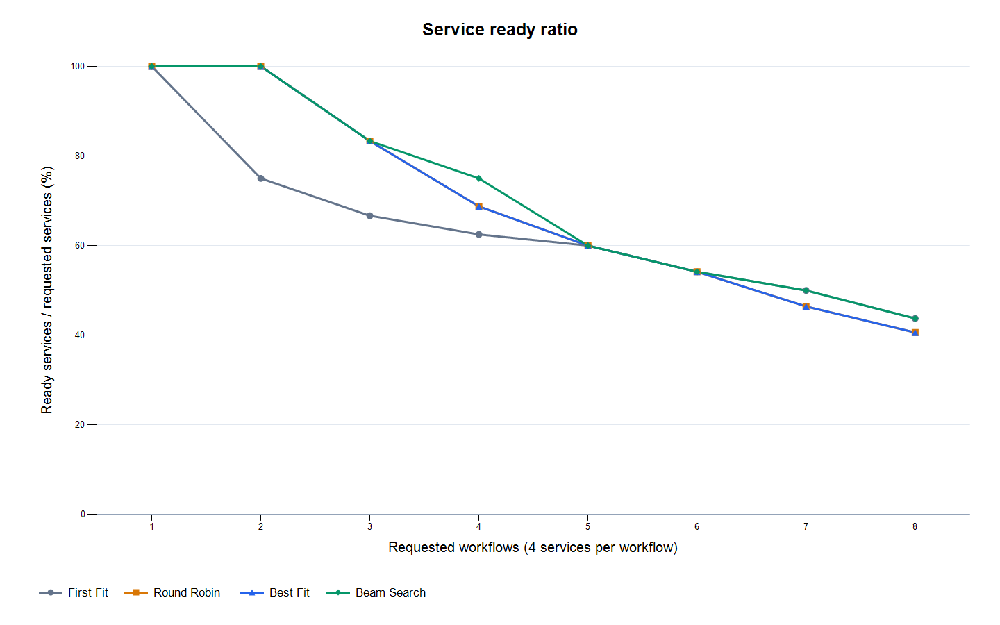
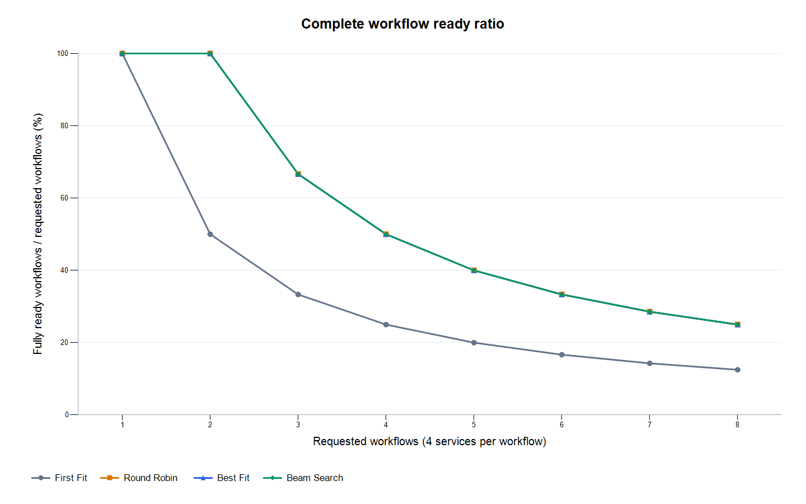
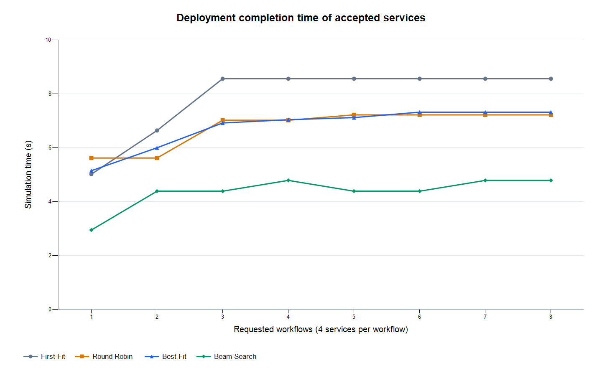
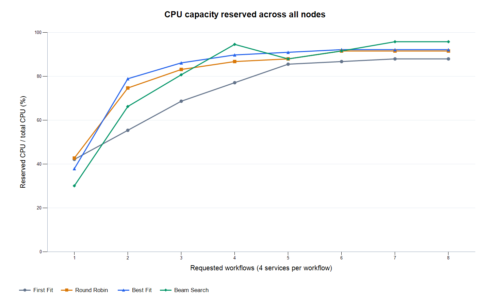
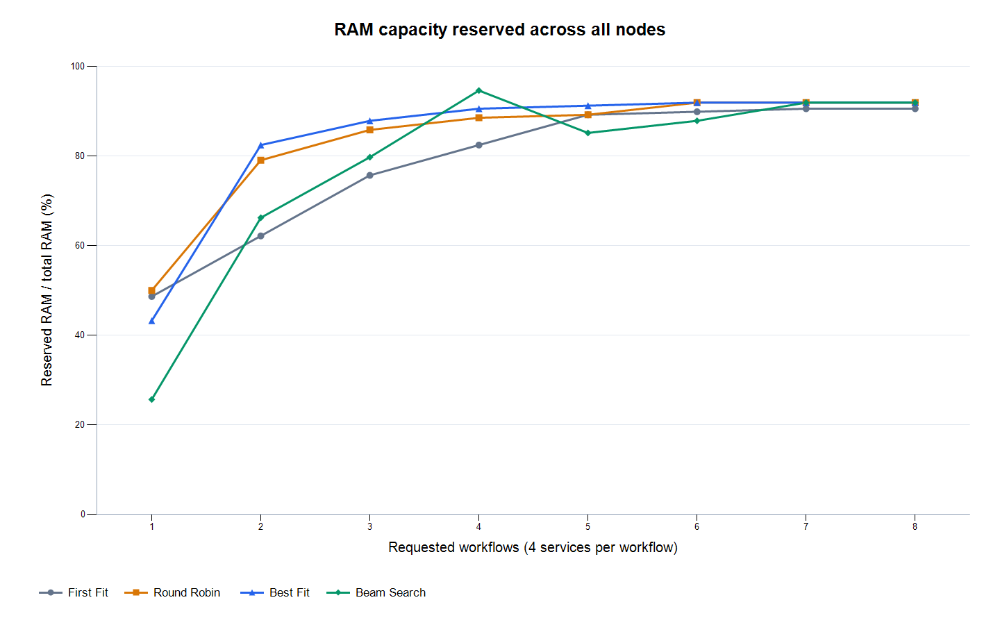
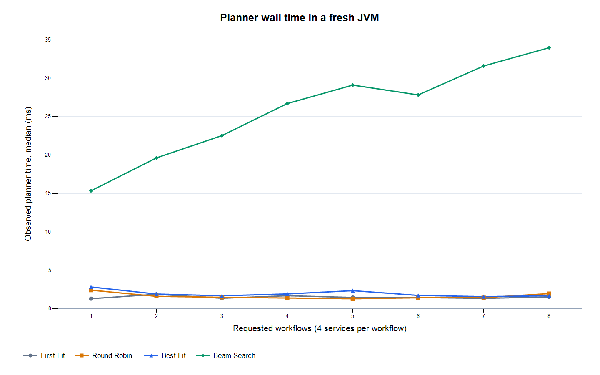

异构微服务部署负载实验
本轮固定 pressure 场景的六个节点，仅改变请求业务链数量；每条链为 collect → preprocess → detect → alert。各系统版本的资源需求、包大小和启动时间沿用 Java 代码中的设定，Beam Search 束宽为 64。普通指标按重复运行求均值，规划耗时图取中位数，最小值和最大值保存在 summary.csv。资源预留比例表示模型分配容量，不是实测 CPU 或 RAM 利用率。
最大负载下的结果：8 条业务链
- first_fit：服务 14/32，完整链 1/8，部署 8.560 s
- round_robin：服务 13/32，完整链 2/8，部署 7.220 s
- best_fit：服务 13/32，完整链 2/8，部署 7.320 s
- beam_search：服务 14/32，完整链 2/8，部署 4.790 s
每个组合仅运行一次，尚未检验重复运行的一致性。
完整结果表
| 链数 | 算法 | 就绪服务 | 完整链 | 服务就绪率 | 完整链就绪率 | 部署时间/s | CPU预留 | RAM预留 | 规划耗时中位数/ms |
|---|---|---|---|---|---|---|---|---|---|
| 1 | first_fit | 4/4 | 1/1 | 100.00% | 100.00% | 5.020 | 42.17% | 48.65% | 1.318 |
| 1 | round_robin | 4/4 | 1/1 | 100.00% | 100.00% | 5.620 | 42.77% | 50.00% | 2.427 |
| 1 | best_fit | 4/4 | 1/1 | 100.00% | 100.00% | 5.150 | 37.95% | 43.24% | 2.838 |
| 1 | beam_search | 4/4 | 1/1 | 100.00% | 100.00% | 2.950 | 30.12% | 25.68% | 15.356 |
| 2 | first_fit | 6/8 | 1/2 | 75.00% | 50.00% | 6.640 | 55.42% | 62.16% | 1.890 |
| 2 | round_robin | 8/8 | 2/2 | 100.00% | 100.00% | 5.620 | 74.70% | 79.05% | 1.622 |
| 2 | best_fit | 8/8 | 2/2 | 100.00% | 100.00% | 6.000 | 78.92% | 82.43% | 1.924 |
| 2 | beam_search | 8/8 | 2/2 | 100.00% | 100.00% | 4.390 | 66.27% | 66.22% | 19.633 |
| 3 | first_fit | 8/12 | 1/3 | 66.67% | 33.33% | 8.560 | 68.67% | 75.68% | 1.372 |
| 3 | round_robin | 10/12 | 2/3 | 83.33% | 66.67% | 7.020 | 83.13% | 85.81% | 1.496 |
| 3 | best_fit | 10/12 | 2/3 | 83.33% | 66.67% | 6.920 | 86.14% | 87.84% | 1.693 |
| 3 | beam_search | 10/12 | 2/3 | 83.33% | 66.67% | 4.390 | 80.72% | 79.73% | 22.534 |
| 4 | first_fit | 10/16 | 1/4 | 62.50% | 25.00% | 8.560 | 77.11% | 82.43% | 1.704 |
| 4 | round_robin | 11/16 | 2/4 | 68.75% | 50.00% | 7.020 | 86.75% | 88.51% | 1.405 |
| 4 | best_fit | 11/16 | 2/4 | 68.75% | 50.00% | 7.040 | 89.76% | 90.54% | 1.937 |
| 4 | beam_search | 12/16 | 2/4 | 75.00% | 50.00% | 4.790 | 94.58% | 94.59% | 26.695 |
| 5 | first_fit | 12/20 | 1/5 | 60.00% | 20.00% | 8.560 | 85.54% | 89.19% | 1.477 |
| 5 | round_robin | 12/20 | 2/5 | 60.00% | 40.00% | 7.220 | 87.95% | 89.19% | 1.307 |
| 5 | best_fit | 12/20 | 2/5 | 60.00% | 40.00% | 7.120 | 90.96% | 91.22% | 2.360 |
| 5 | beam_search | 12/20 | 2/5 | 60.00% | 40.00% | 4.390 | 87.95% | 85.14% | 29.098 |
| 6 | first_fit | 13/24 | 1/6 | 54.17% | 16.67% | 8.560 | 86.75% | 89.86% | 1.472 |
| 6 | round_robin | 13/24 | 2/6 | 54.17% | 33.33% | 7.220 | 91.57% | 91.89% | 1.434 |
| 6 | best_fit | 13/24 | 2/6 | 54.17% | 33.33% | 7.320 | 92.17% | 91.89% | 1.742 |
| 6 | beam_search | 13/24 | 2/6 | 54.17% | 33.33% | 4.390 | 91.57% | 87.84% | 27.821 |
| 7 | first_fit | 14/28 | 1/7 | 50.00% | 14.29% | 8.560 | 87.95% | 90.54% | 1.353 |
| 7 | round_robin | 13/28 | 2/7 | 46.43% | 28.57% | 7.220 | 91.57% | 91.89% | 1.448 |
| 7 | best_fit | 13/28 | 2/7 | 46.43% | 28.57% | 7.320 | 92.17% | 91.89% | 1.583 |
| 7 | beam_search | 14/28 | 2/7 | 50.00% | 28.57% | 4.790 | 95.78% | 91.89% | 31.583 |
| 8 | first_fit | 14/32 | 1/8 | 43.75% | 12.50% | 8.560 | 87.95% | 90.54% | 1.558 |
| 8 | round_robin | 13/32 | 2/8 | 40.63% | 25.00% | 7.220 | 91.57% | 91.89% | 1.980 |
| 8 | best_fit | 13/32 | 2/8 | 40.63% | 25.00% | 7.320 | 92.17% | 91.89% | 1.695 |
| 8 | beam_search | 14/32 | 2/8 | 43.75% | 25.00% | 4.790 | 95.78% | 91.89% | 33.959 |
负载变化曲线






相同就绪数量下的时间比较
正值表示 Beam Search 比基线用时更少，负值表示用时更多。仅当就绪服务数和完整链数均相同时计算，这不是对实际业务价值完全等价的证明。
| 链数 | 基线 | Beam时间缩短比例 | 比较条件 |
|---|---|---|---|
| 1 | first_fit | 41.24% | equal ready-service and complete-workflow counts |
| 1 | round_robin | 47.51% | equal ready-service and complete-workflow counts |
| 1 | best_fit | 42.72% | equal ready-service and complete-workflow counts |
| 2 | first_fit | 不直接比较 | different ready counts; compare admission before time |
| 2 | round_robin | 21.89% | equal ready-service and complete-workflow counts |
| 2 | best_fit | 26.83% | equal ready-service and complete-workflow counts |
| 3 | first_fit | 不直接比较 | different ready counts; compare admission before time |
| 3 | round_robin | 37.46% | equal ready-service and complete-workflow counts |
| 3 | best_fit | 36.56% | equal ready-service and complete-workflow counts |
| 4 | first_fit | 不直接比较 | different ready counts; compare admission before time |
| 4 | round_robin | 不直接比较 | different ready counts; compare admission before time |
| 4 | best_fit | 不直接比较 | different ready counts; compare admission before time |
| 5 | first_fit | 不直接比较 | different ready counts; compare admission before time |
| 5 | round_robin | 39.20% | equal ready-service and complete-workflow counts |
| 5 | best_fit | 38.34% | equal ready-service and complete-workflow counts |
| 6 | first_fit | 不直接比较 | different ready counts; compare admission before time |
| 6 | round_robin | 39.20% | equal ready-service and complete-workflow counts |
| 6 | best_fit | 40.03% | equal ready-service and complete-workflow counts |
| 7 | first_fit | 不直接比较 | different ready counts; compare admission before time |
| 7 | round_robin | 不直接比较 | different ready counts; compare admission before time |
| 7 | best_fit | 不直接比较 | different ready counts; compare admission before time |
| 8 | first_fit | 不直接比较 | different ready counts; compare admission before time |
| 8 | round_robin | 不直接比较 | different ready counts; compare admission before time |
| 8 | best_fit | 不直接比较 | different ready counts; compare admission before time |
指标解释和适用范围
这些结果描述固定合成场景下的离散事件部署仿真。当前只检查操作系统与 CPU/RAM 容量约束，未验证真实容器、RTP、驱动/API 或安全策略兼容性。部署时间只覆盖被接纳的服务，应结合服务和完整业务链就绪数量解释；完整链数量相同也不代表链的身份相同。各组合启动独立 JVM，没有排除 JIT/预热影响，规划耗时仅作描述；重复同一确定性输入不能代替随机场景或独立样本，报告不作显著性或普遍最优结论。
数据与复现
逐次汇总 · 分组汇总 · 条件化时间比较 · 配置与环境 · 源码哈希 · Markdown报告
原始 CSV 位于 raw/，完整日志位于 logs/，源码和脚本快照位于 snapshot/。